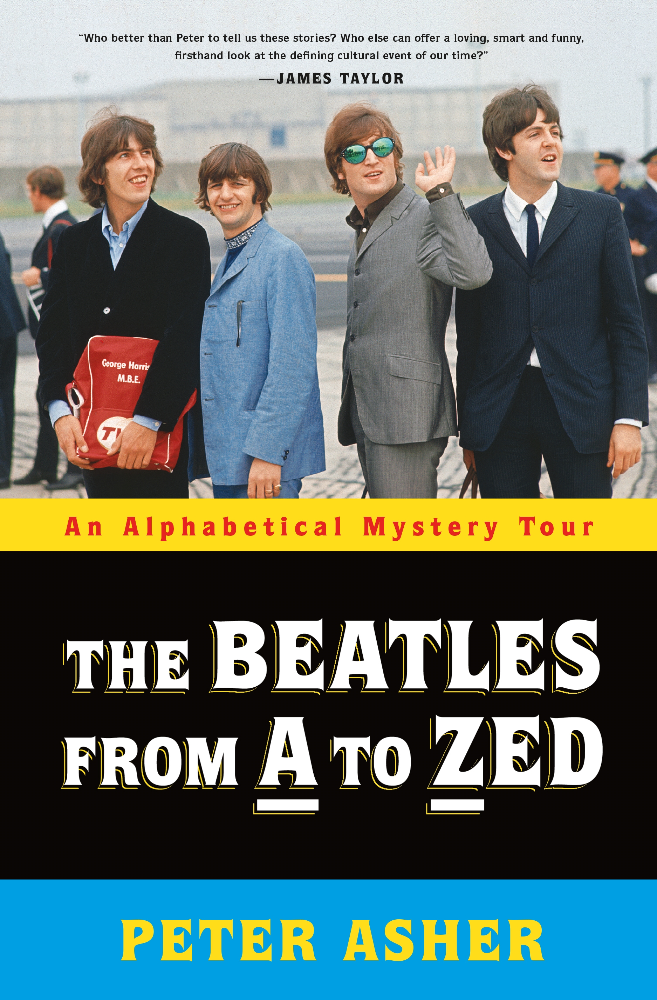

The Beatles from A to Zed
⭐️⭐️⭐️⭐️⭐️
Format: üéß (9 hours 2 minutes)
This book takes an alphabetical approach to reviewing songs, people, places, and other things associated with The Beatles. It's not intended to be fully comprehensive, but with Peter Asher's perspective as a close friend of The Beatles, and more intertwined in their existence than I care to go into here, it's an interesting, entertaining, and informative look at The Beatles.
With an alphabetic approach to the topic, there's obviously no narrative flow to the book. At the same time, I felt like Peter connected topics very well, and covered things rather thoroughly. Additionally, unless you're ultra familiar with The Beatles, I don't think reading the book alone would be sufficient to appreciate the various things he discusses. Admittedly, I listened to the book one chapter at a time, then would pause the book, and go listen to some carefully curated playlists (thanks to my awesome brother), so I could hear the details of that chapter. The insights from the book certainly have helped me appreciate their music more, and marvel more at their collective and individual genius.
Again - not fully comprehensive (nor claimed to be), but quite comprehensive nonetheless. I doubt anybody who isn't a Beatles fan would enjoy the book, and even those who are might feel a little lost at some stages. I wouldn't have enjoyed it as much if I didn't have the accompanying music to listen to. All things told, however, I loved this.
Disclaimer: every year (except for one) since I joined a streaming music service, during their annual, personalized "Year in Review", my top-played artist has been The Beatles. I love their music. They changed music in such a drastic way, and have an amazing body of work as a group, not to mention some rather notable careers after their time together. If you're not a Beatles fan, I'd argue you haven't listened to them enough. If you're anti-Beatles, I wouldn't be surprised if we didn't agree on a variety of other things as well.
- Prior: Rethink Creativity
- Next: Midnight in Chernobyl